CLIFFORD STUDIO

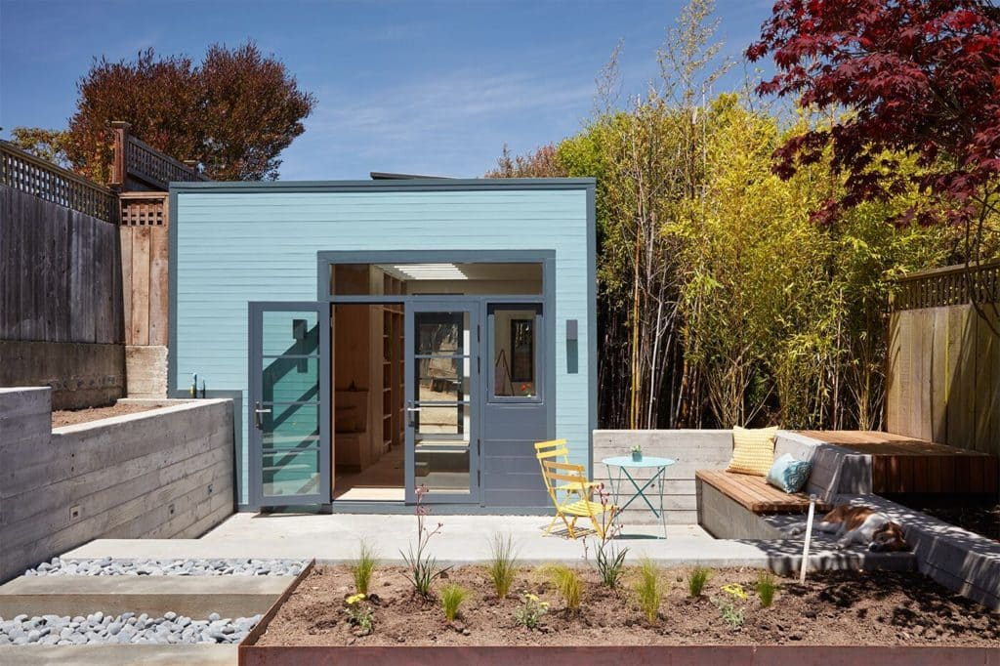
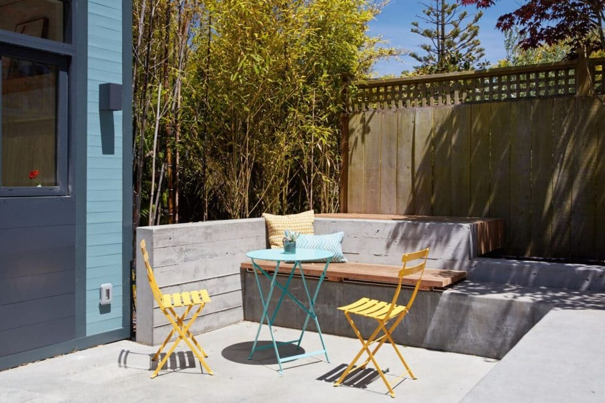
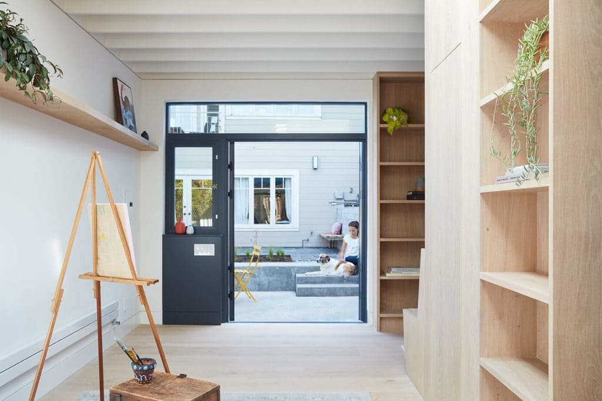
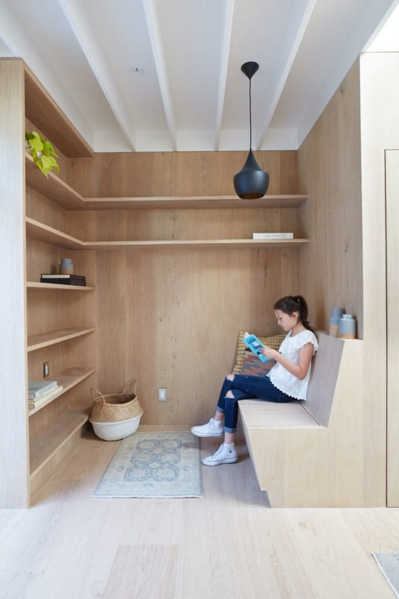
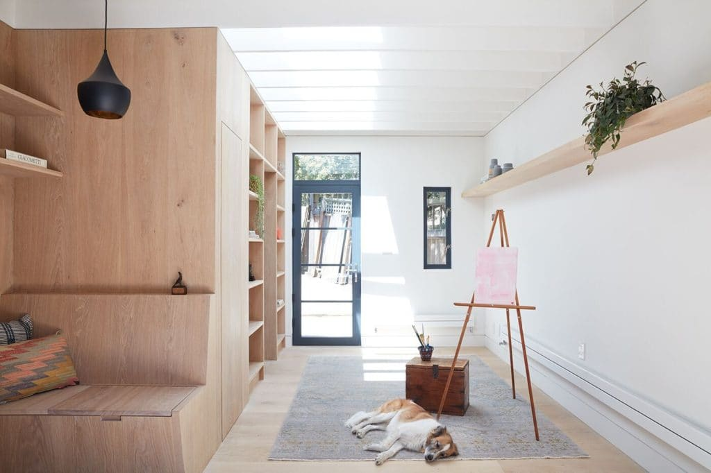
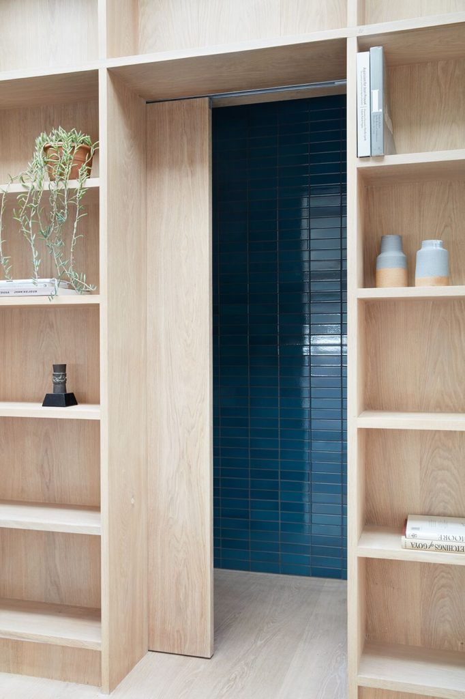
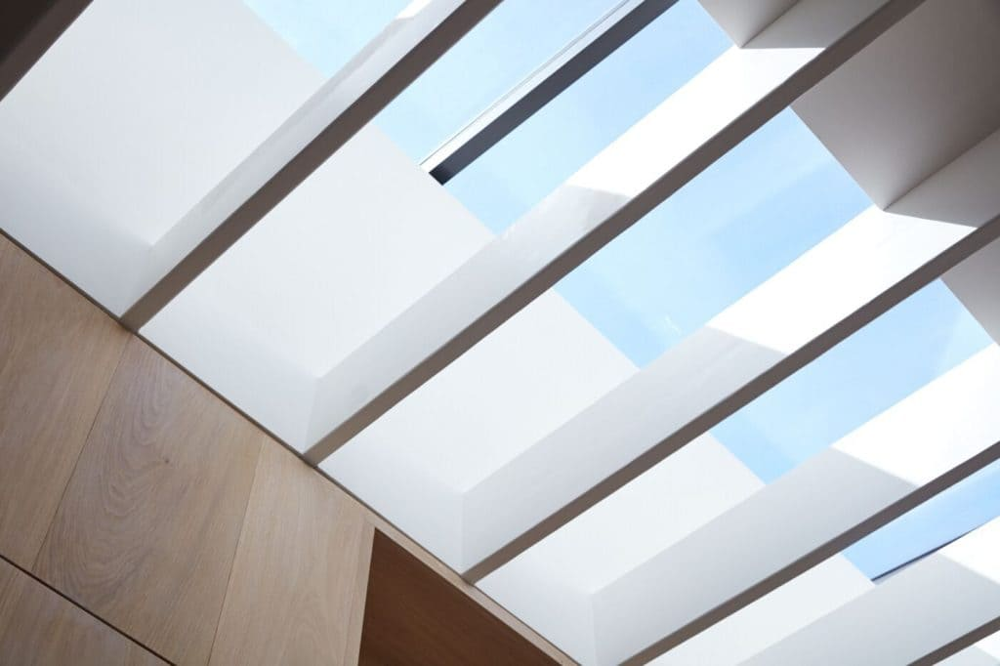
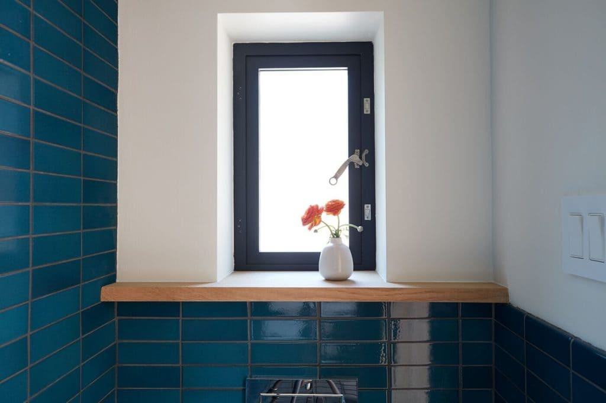
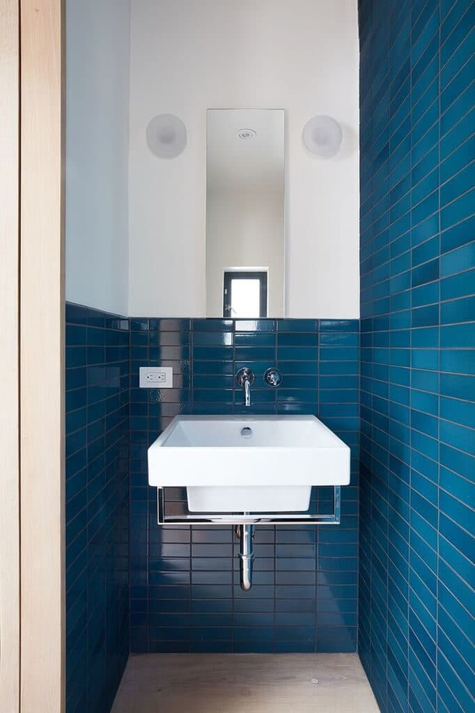
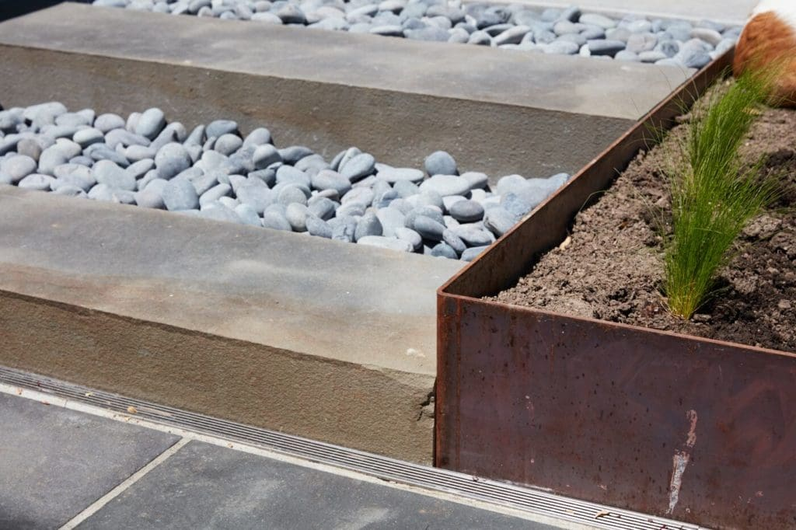
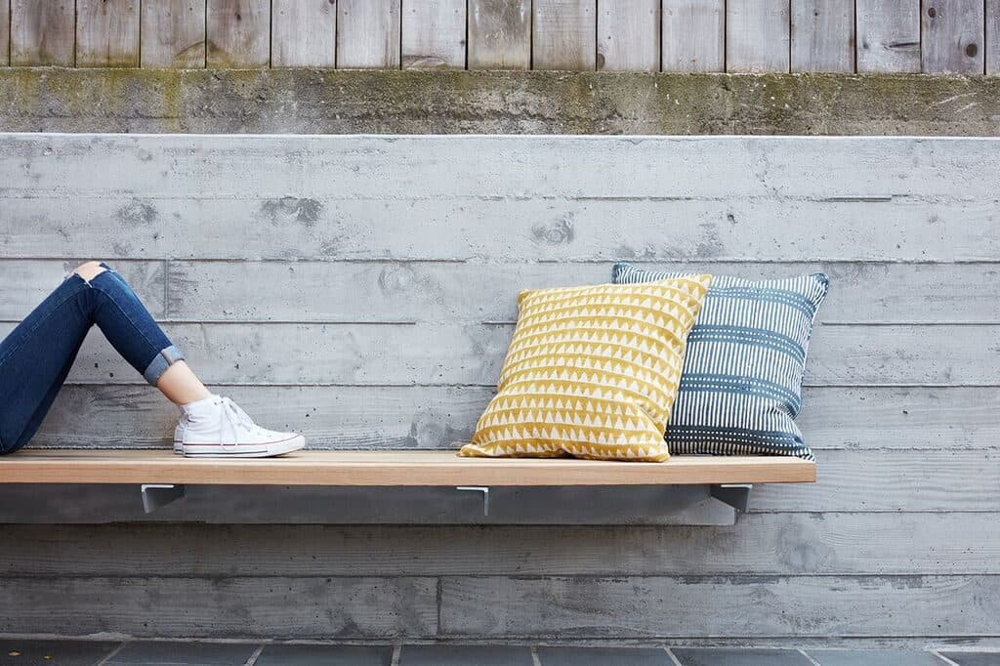
Contractor
Devlin/Mc Nally Construction
Rendering
Beth Mackay
Photo Credit
Mariko Reed
Press
CLIFFORD STUDIO
SAN FRANCISCO, CA
This project entails converting a freestanding carriage house into a painting studio , powder room and reading niche with detailed attention to light, materiality and craft. Conceptualized as a box for suffused light, a long skylight spans much of the building and weaves light through the wood joists and the space. The light chimney is shaped to create verticality in the space, while bouncing indirect light off the adjacent wall surface. This creates a light-filled space while minimizing the glare of sunlight on computer screens. Solid white oak panels define the western wall of shelves and furniture. The seams on this accent wall align with the floor boards, establishing continuity between the finishes. The courtyard is integrated with the new space, featuring a lower patio that serves the studio. A continuous L-shaped concrete bench doubles as the top landing to the steps. Solid bluestone pavers transition between the levels, while built-in benches provide opportunities for rest. Board-formed concrete planters define the western and eastern edges of the courtyard.
© 2023 BACH ARCHITECTURE. All rights reserved. | 3752 20th Street, San Francisco, CA 94110 | (415) 425-8582 | info@bach-architecture.com